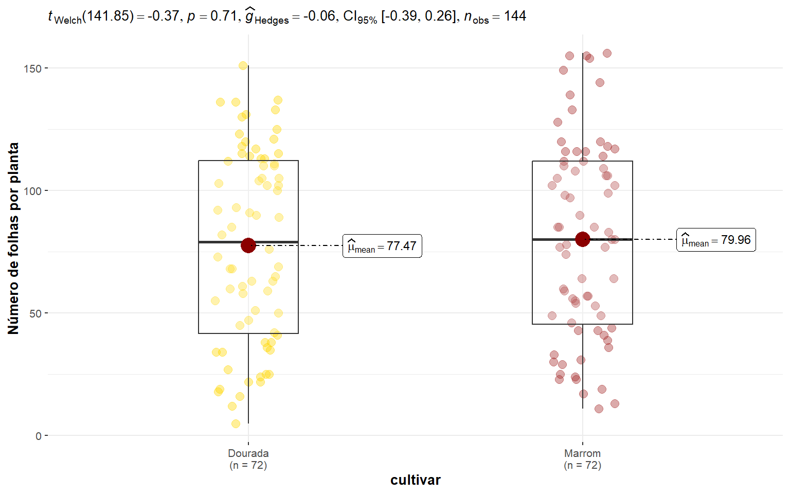
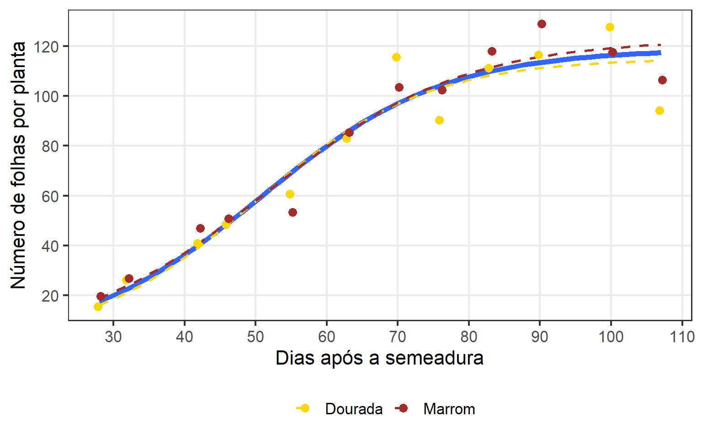
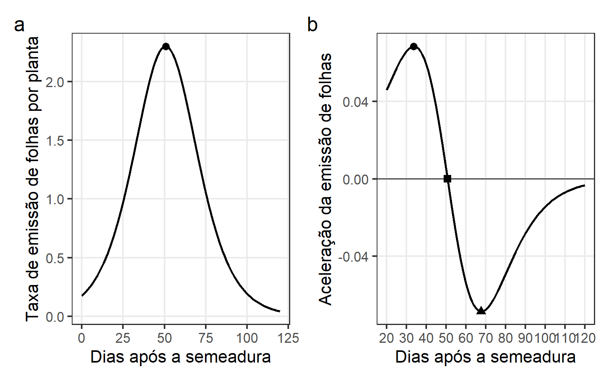

Padrão de emissão de folhas de cultivares de linho revelado pelo modelo logístico e seus pontos críticos
1 Pacotes
library(rio)
library(tidyverse)
library(metan)
library(broom)
library(nlme)
library(rpanel)
my_theme <-
theme_bw(base_size = 16) +
theme(
panel.grid.minor = element_blank(), #remove minor gridlines
legend.position = "bottom",
legend.title = element_blank()
)2 Dados
df <- import("data/area_foliar.xlsx")
df_ap <- import("data/df_ap.xlsx")3 Computar estatístias
# criar as médias
df_nlm <-
df |>
group_by(data, das, bloco, cultivar, planta) |>
summarise(n = n()) |>
left_join(df_ap) |>
mutate(das = as.numeric(das)) |>
ungroup()
# média cultivar das
df_modelos <-
df_nlm |>
means_by(das, cultivar) |>
mutate(das = as.numeric(das))
df_grouped <-
groupedData(formula = n ~ das|cultivar,
data = df_nlm,
order.groups = FALSE)4 Descritiva
ggstatsplot::ggbetweenstats(df_nlm, cultivar, n,
plot.type = "box",
bf.message = FALSE,
ylab = "Número de folhas por planta") +
scale_color_manual(values = c("gold", "brown"))
ggsave("figs/t_nf.png", width = 6, height = 4)5 Modelos não lineares
5.1 Chutes iniciais
source("https://raw.githubusercontent.com/walmes/wzRfun/master/R/rp.nls.R")
model <- af_planta ~ b1/(1 + exp(b2 - b3 * das))
start <- list(b1 = c(init = 20, from = 20, to = 200),
b2 = c(init = 1, from = 1, to = 20),
b3 = c(init = 0.01, from = 0, to = 0.2))
par_mvr <- rp.nls(model = model,
data = df_nlm |> as.data.frame(),
start = start)6 Número de folhas
6.1 Full model
# full model
full <-
nls(n ~ b1/(1 + exp(b2 - b3 * das)),
data = df_nlm,
start = c(b1 = 40,
b2 = 3,
b3 = 0.05))6.2 Efeito aleatório de cultivar no parâmetro b1
mix_b1 <-
nlme(n ~ b1/(1 + exp(b2 - b3 * das)),
method = "ML",
data = df_grouped,
fixed = b1 + b2 + b3 ~ 1,
random = b1 ~ 1,
start = c(b1 = 120,
b2 = 3,
b3 = 0.05))
summary(mix_b1)
## Nonlinear mixed-effects model fit by maximum likelihood
## Model: n ~ b1/(1 + exp(b2 - b3 * das))
## Data: df_grouped
## AIC BIC logLik
## 1243.331 1258.18 -616.6654
##
## Random effects:
## Formula: b1 ~ 1 | cultivar
## b1 Residual
## StdDev: 0.001339313 17.52205
##
## Fixed effects: b1 + b2 + b3 ~ 1
## Value Std.Error DF t-value p-value
## b1 118.87940 3.651644 140 32.55504 0
## b2 3.92516 0.367797 140 10.67209 0
## b3 0.07739 0.008079 140 9.58008 0
## Correlation:
## b1 b2
## b2 -0.531
## b3 -0.690 0.959
##
## Standardized Within-Group Residuals:
## Min Q1 Med Q3 Max
## -3.1031528 -0.4290684 0.0791011 0.5826587 2.5767817
##
## Number of Observations: 144
## Number of Groups: 2
ranef(mix_b1)anova(mix_b1,full)6.3 Efeito aleatório de cultivar no parâmetro b2
mix_b2 <-
nlme(n ~ b1/(1 + exp(b2 - b3 * das)),
method = "ML",
data = df_grouped,
fixed = b1 + b2 + b3 ~ 1,
random = b2 ~ 1,
start = c(b1 = 120,
b2 = 3,
b3 = 0.05))
summary(mix_b2)
## Nonlinear mixed-effects model fit by maximum likelihood
## Model: n ~ b1/(1 + exp(b2 - b3 * das))
## Data: df_grouped
## AIC BIC logLik
## 1243.331 1258.18 -616.6654
##
## Random effects:
## Formula: b2 ~ 1 | cultivar
## b2 Residual
## StdDev: 2.822055e-05 17.52205
##
## Fixed effects: b1 + b2 + b3 ~ 1
## Value Std.Error DF t-value p-value
## b1 118.87939 3.651643 140 32.55504 0
## b2 3.92516 0.367797 140 10.67209 0
## b3 0.07739 0.008079 140 9.58008 0
## Correlation:
## b1 b2
## b2 -0.531
## b3 -0.690 0.959
##
## Standardized Within-Group Residuals:
## Min Q1 Med Q3 Max
## -3.10315276 -0.42906838 0.07910115 0.58265868 2.57678172
##
## Number of Observations: 144
## Number of Groups: 2
ranef(mix_b2)anova(mix_b2,full)6.4 Efeito aleatório de cultivar no parâmetro b3
mix_b3 <-
nlme(n ~ b1/(1 + exp(b2 - b3 * das)),
method = "ML",
data = df_grouped,
fixed = b1 + b2 + b3 ~ 1,
random = b3 ~ 1,
start = c(b1 = 120,
b2 = 3,
b3 = 0.05))
summary(mix_b3)
## Nonlinear mixed-effects model fit by maximum likelihood
## Model: n ~ b1/(1 + exp(b2 - b3 * das))
## Data: df_grouped
## AIC BIC logLik
## 1243.331 1258.18 -616.6654
##
## Random effects:
## Formula: b3 ~ 1 | cultivar
## b3 Residual
## StdDev: 4.633043e-07 17.52205
##
## Fixed effects: b1 + b2 + b3 ~ 1
## Value Std.Error DF t-value p-value
## b1 118.87939 3.651643 140 32.55504 0
## b2 3.92516 0.367797 140 10.67209 0
## b3 0.07739 0.008079 140 9.58008 0
## Correlation:
## b1 b2
## b2 -0.531
## b3 -0.690 0.959
##
## Standardized Within-Group Residuals:
## Min Q1 Med Q3 Max
## -3.10315274 -0.42906837 0.07910118 0.58265868 2.57678171
##
## Number of Observations: 144
## Number of Groups: 2
ranef(mix_b3)anova(mix_b3,full)6.5 Modelo ajustado
formula <- n ~ b1/(1 + exp(b2 - b3 * das))
start_af = c(b1 = 40,
b2 = 3,
b3 = 0.05)
mod_af <- nls(formula,
data = df_modelos,
start = start_af)
parameters <-
mod_af |>
tidy() |>
select(term, estimate) |>
pivot_wider(names_from = term,
values_from = estimate)
parameters[[1]]/(1 + exp(parameters[[2]] - parameters[[3]] * 33.69))
## [1] 25.10885
parameters[[1]]/(1 + exp(parameters[[2]] - parameters[[3]] * 67.73))
## [1] 93.75
# plot_af <-
ggplot(df_nlm, aes(das, n)) +
geom_smooth(method = "nls",
method.args = list(formula = y ~ b1/(1 + exp(b2 - b3 * x)),
start = start_af),
se = FALSE, size = 2) +
geom_smooth(method = "nls",
method.args = list(formula = y ~ b1/(1 + exp(b2 - b3 * x)),
start = start_af),
se = FALSE,
aes(color = cultivar),
linetype = 2) +
stat_summary(fun = mean,
geom = "point",
aes(color = cultivar),
size = 3,
position = position_dodge(width = 0.8)) +
scale_y_continuous(breaks = seq(20, 150, by = 20)) +
scale_x_continuous(breaks = seq(20, 120, by = 10)) +
labs(x = "Dias após a semeadura",
y = "Número de folhas por planta") +
my_theme +
scale_color_manual(values = c("gold", "brown"))
ggsave("figs/curva_nf.png", width = 8, height = 5)6.6 Qualidade de ajuste
get_r2 <- function(model){
aic <- AIC(model)
fit <- model$m$fitted()
res <- model$m$resid()
obs <- fit + res
gof <- gof(obs, fit, digits = 4)
r2 <- gof[which(rownames(gof) == "R2")]
data.frame(aic = aic, r2 = r2)
}
qualidade <- get_r2(mod_af)6.7 Primeira derivada
# primeira derivada
D(expression(b1/(1 + exp(b2 - b3 * das))), "das")
## b1 * (exp(b2 - b3 * das) * b3)/(1 + exp(b2 - b3 * das))^2
dy <- function(x,b1,b2,b3){
b1 * (exp(b2 - b3 * x) * b3)/(1 + exp(b2 - b3 * x))^2
}
parameters <-
parameters |>
mutate(xpi = b2 / b3,
ypi = dy(xpi, b1, b2, b3))
plot_pi <-
ggplot() +
stat_function(fun = dy,
size = 1,
xlim = c(0, 120),
args = c(b1 = parameters[[1, 1]],
b2 = parameters[[1, 2]],
b3 = parameters[[1, 3]])) +
geom_point(aes(xpi, ypi),
data = parameters,
size = 3) +
labs(x = "Dias após a semeadura",
y = "Taxa de emissão de folhas por planta") +
my_theme +
scale_color_manual(values = c("gold", "brown"))6.8 Segunda derivada
# segunda derivada
D(expression(b1 * (exp(b2 - b3 * x) * b3)/(1 + exp(b2 - b3 * x))^2), "x")
## -(b1 * (exp(b2 - b3 * x) * b3 * b3)/(1 + exp(b2 - b3 * x))^2 -
## b1 * (exp(b2 - b3 * x) * b3) * (2 * (exp(b2 - b3 * x) * b3 *
## (1 + exp(b2 - b3 * x))))/((1 + exp(b2 - b3 * x))^2)^2)
d2y <- function(x,b1,b2,b3){
-(b1 * (exp(b2 - b3 * x) * b3 * b3)/(1 + exp(b2 - b3 * x))^2 -
b1 * (exp(b2 - b3 * x) * b3) * (2 * (exp(b2 - b3 * x) * b3 *
(1 + exp(b2 - b3 * x))))/((1 + exp(b2 - b3 * x))^2)^2)
}
parameters <-
parameters |>
mutate(xmap = (b2 - 1.3170)/b3,
xmdp = (b2 + 1.3170)/b3,
ymap = d2y(xmap, b1, b2, b3),
ymdp = d2y(xmdp, b1, b2, b3),
) |>
bind_cols(qualidade)
export(parameters, "data/parametros_nfol.xlsx")
df_acel <-
ggplot() +
geom_hline(yintercept = 0) +
stat_function(fun = d2y,
size = 1,
xlim = c(20, 120),
args = c(b1 = parameters[[1, 1]],
b2 = parameters[[1, 2]],
b3 = parameters[[1, 3]])) +
geom_point(aes(xmap, ymap),
data = parameters,
size = 3,
shape = 19) +
geom_point(aes(xmdp, ymdp),
data = parameters,
size = 3,
shape = 17) +
geom_point(aes(xpi, 0),
data = parameters,
size = 3,
shape = 15,
show.legend = FALSE) +
scale_x_continuous(breaks = seq(20, 120, by = 10)) +
labs(x = "Dias após a semeadura",
y = "Aceleração da emissão de folhas") +
my_themearrange_ggplot(plot_pi, df_acel,
tag_levels = "a",
guides = "collect")
ggsave("figs/pontos_criticos_nf.png", width = 12, height = 6)7 Section info
sessionInfo()
## R version 4.2.0 (2022-04-22 ucrt)
## Platform: x86_64-w64-mingw32/x64 (64-bit)
## Running under: Windows 10 x64 (build 22621)
##
## Matrix products: default
##
## locale:
## [1] LC_COLLATE=Portuguese_Brazil.utf8 LC_CTYPE=Portuguese_Brazil.utf8
## [3] LC_MONETARY=Portuguese_Brazil.utf8 LC_NUMERIC=C
## [5] LC_TIME=Portuguese_Brazil.utf8
##
## attached base packages:
## [1] tcltk stats graphics grDevices utils datasets methods
## [8] base
##
## other attached packages:
## [1] hydroGOF_0.4-0 rpanel_1.1-5.1 nlme_3.1-157 broom_1.0.1
## [5] metan_1.17.0.9000 MASS_7.3-58.1 lmtest_0.9-40 zoo_1.8-11
## [9] nlstools_2.0-0 car_3.1-1 carData_3.0-5 forcats_0.5.2
## [13] stringr_1.4.1 dplyr_1.0.10 purrr_0.3.5 readr_2.1.3
## [17] tidyr_1.2.1 tibble_3.1.8 ggplot2_3.4.0 tidyverse_1.3.2
## [21] rio_0.5.29 leaflet_2.1.1
##
## loaded via a namespace (and not attached):
## [1] readxl_1.4.1 backports_1.4.1 systemfonts_1.0.4
## [4] plyr_1.8.7 sp_1.5-1 splines_4.2.0
## [7] crosstalk_1.2.0 gstat_2.1-0 TH.data_1.1-1
## [10] digest_0.6.29 htmltools_0.5.2 lmerTest_3.1-3
## [13] fansi_1.0.3 magrittr_2.0.3 paletteer_1.5.0
## [16] googlesheets4_1.0.1 tzdb_0.3.0 openxlsx_4.2.5.1
## [19] modelr_0.1.9 sandwich_3.0-2 xts_0.12.2
## [22] timechange_0.1.1 rmdformats_1.0.4 colorspace_2.0-3
## [25] rvest_1.0.3 ggrepel_0.9.2 textshaping_0.3.6
## [28] haven_2.5.1 xfun_0.31 crayon_1.5.2
## [31] jsonlite_1.8.3 lme4_1.1-31 zeallot_0.1.0
## [34] survival_3.3-1 glue_1.6.2 polyclip_1.10-4
## [37] gtable_0.3.1 gargle_1.2.1 emmeans_1.8.2
## [40] statsExpressions_1.3.5 abind_1.4-5 scales_1.2.1
## [43] mvtnorm_1.1-3 DBI_1.1.3 GGally_2.1.2
## [46] rstatix_0.7.1 Rcpp_1.0.9 performance_0.10.0
## [49] xtable_1.8-4 foreign_0.8-82 proxy_0.4-27
## [52] intervals_0.15.2 datawizard_0.6.3 htmlwidgets_1.5.4
## [55] httr_1.4.4 FNN_1.1.3.1 RColorBrewer_1.1-3
## [58] ellipsis_0.3.2 pkgconfig_2.0.3 reshape_0.8.9
## [61] farver_2.1.1 sass_0.4.2 dbplyr_2.2.1
## [64] utf8_1.2.2 effectsize_0.8.2 tidyselect_1.2.0
## [67] labeling_0.4.2 rlang_1.0.6 polynom_1.4-1
## [70] munsell_0.5.0 cellranger_1.1.0 tools_4.2.0
## [73] cachem_1.0.6 cli_3.3.0 generics_0.1.3
## [76] mathjaxr_1.6-0 evaluate_0.18 fastmap_1.1.0
## [79] yaml_2.3.5 ragg_1.2.4 rematch2_2.1.2
## [82] knitr_1.40 fs_1.5.2 zip_2.2.2
## [85] hydroTSM_0.6-0 xml2_1.3.3 correlation_0.8.3
## [88] compiler_4.2.0 rstudioapi_0.14 curl_4.3.3
## [91] e1071_1.7-12 ggsignif_0.6.4 reprex_2.0.2
## [94] spacetime_1.2-8 tweenr_2.0.2 bslib_0.4.1
## [97] stringi_1.7.8 highr_0.9 parameters_0.19.0
## [100] lattice_0.20-45 Matrix_1.5-1 nloptr_2.0.3
## [103] vctrs_0.5.0 pillar_1.8.1 lifecycle_1.0.3
## [106] jquerylib_0.1.4 estimability_1.4.1 data.table_1.14.4
## [109] maptools_1.1-5 insight_0.18.6 patchwork_1.1.2
## [112] R6_2.5.1 bookdown_0.29 codetools_0.2-18
## [115] boot_1.3-28 assertthat_0.2.1 withr_2.5.0
## [118] multcomp_1.4-20 bayestestR_0.13.0 mgcv_1.8-40
## [121] hms_1.1.2 grid_4.2.0 coda_0.19-4
## [124] class_7.3-20 minqa_1.2.5 rmarkdown_2.17
## [127] googledrive_2.0.0 automap_1.0-16 ggpubr_0.4.0
## [130] ggforce_0.4.1 numDeriv_2016.8-1.1 lubridate_1.9.0
## [133] ggstatsplot_0.9.5